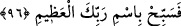

Gerektiği şekilde yakînen bildim.
Eğer perde aradan kaldırılsa,
Bu yakîn zerre kadar çoğalmaz.
Yâni eğer âhiret halleri keşf olunsa ve hepsini görsem, bugün benim için ilme’l-yakîn
olan aynen yarın ayne’l-yakîn mesabesinde olduğundan yakînimde bir zerre artış olmaz.
‘Aleyhissalatü vesselâm Efendimiz şöyle duâ etmiştir: “Allahım senden, kalbime
dokunup yerleşen îman ve peşinden küfür olmayan bir yakîn ihsân etmeni
dilerim.”[234] Bu yakîn, gözle görülmüşcesine oluşan ilim ve gerçeğin ortaya çıkmasıyla
kazanılan yakîndir. Bu sebeple biz deriz ki, ilme’l-yakînin sâhipleri tehlike ve endişe
içindedirler. Dolayısıyla onlar vâsıtasıyla irşad gerçekleşmez. Ayne’l-yakîn sahibi olan,
öncekinin aksine irşad kutbudur. Hakka’l-yakin sahibi olan ise kutuplar kutbudur. Öyle
olunca tecellîler üç kısımdır: İlmî tecellî, aynî tecellî ve hakkî tecellî. Birinci tecellî,
Kâbe hakkında görmeksizin anlatılanlarla kazanılan zorunlu bilgi; ikincisi Kâbe’yi
uzaktan görmekle kazanılan bilgi; üçüncüsü ise bizzat Kâbe’ye girmekle kazanılan bilgi
gibidir.
Katâde demiştir ki: Allah Teala Kur’an hakkında yakîn bilgi sahibi yapmadan hiçbir
kulunu bırakmaz. Mü’mini dünyada iken bu yakîn ilmine sâhip kılar ve bu da ona
kıyâmet gününde fayda verir. Kâfir ise bu konuda ancak kıyâmette yakîn bilgi sahibi
olur, ama bu ona hiçbir fayda sağlamaz.
Mollâ Câmî şöyle demiştir:
Yakîn denizinden susuz cânına su ver,
Artık şüphe serâbında kurumuş dudakla daha fazla oturma.
96. Öyleyse ulu Rabbinin adını tenzih ile an.
“Öyleyse” ey Rasûlüm, “Ulu Rabbinin adını tenzih ile an.” Âyetin başındaki fa
tesbihi öncekiler üzerine tertip veya emretmek içindir. Bu sure-i celilenin katmanları
arasında tafsilatlı olarak anlatılanlar, Allah Teala’yı yüce şânına lâyık olmayan
şeylerden tenzihi gerektiren hususlardır ki, O’na ortak koşmak ve O’nun hakkı anlatan
âyetlerini yalanlamaktır.
Ebu Osman (k.s), bu sürenin son âyetinin mânâsı şöyle olduğunu söylemiştir: “Senin
ümmetini, sünnetine tutunmaya muvaffak kıldığımızdan dolayı şükür için Rabbinin adını
tenzih ile an.”
Fethurrahman’da da denilmiştir ki: Bu ifâde inkârcıların sözlerinden ve onların
dünyaya âid diğer işlerinden kaçınılmasını, âhiret işlerine yönelinmesini, Allah’a kulluk